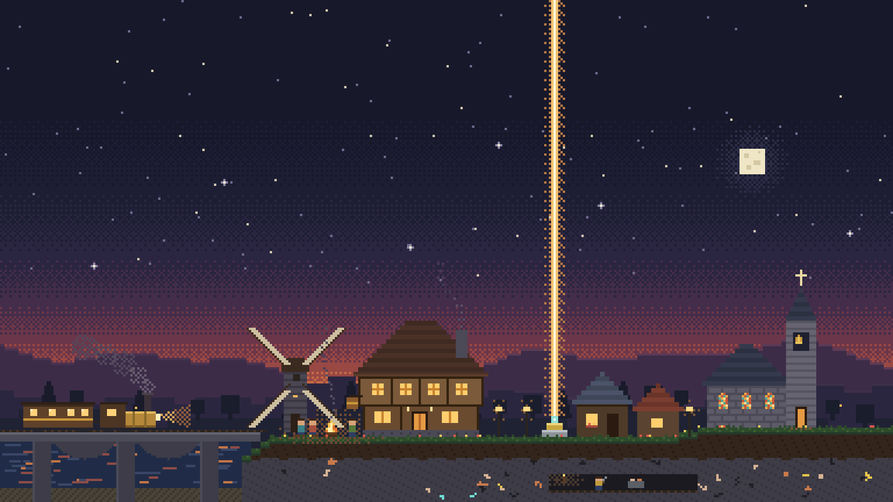
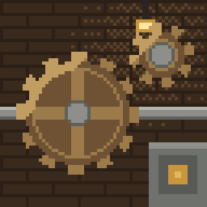
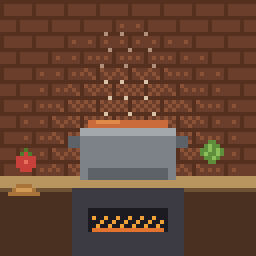
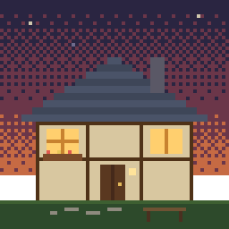
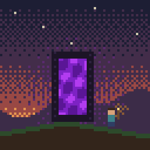
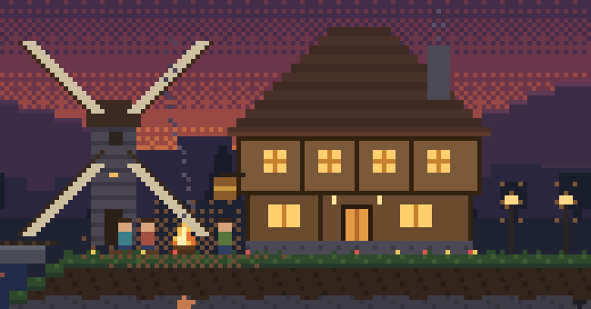
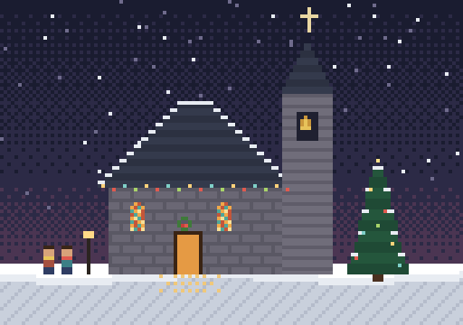

Вечерами мы строим мир вместе
Небольшой сервер Minecraft для своих: поезда Create, уютные дома, своя кухня, походы в Незер и голосовой чат. Заходят по личному приглашению.

Что это за сервер
Это Minecraft для небольшой компании: друзья, друзья друзей и те, кого мы позвали лично. Чужих нет, гриферов нет, спешить некуда.
Мы строим общий городок — с таверной у костра, площадью, вокзалом и часовней — и вместе проходим мир: от первой ночи до похода на дракона. Каждый занимается тем, что ему по душе, а самое интересное случается, когда собираемся все.
- Игра
- Minecraft 1.21.1 с модами. Всё нужное скачается само при первом входе.
- Лаунчер
- Подойдёт TLauncher, покупать игру не нужно.
- Компьютер
- Идёт и на слабых ноутбуках: хватит 8 ГБ оперативной памяти.
- Голос
- Голосовой чат прямо в игре: слышно тех, кто рядом.
- Сколько нас
- Обычно от трёх до шести человек одновременно.
- Вход
- По белому списку и паролю: под твоим ником не зайдёт никто другой.
Четыре дороги
Выбери, чем хочется заниматься. Дороги нужны друг другу, и ни одна не убегает вперёд: две главные вехи мы проходим всей компанией.
-

Инженер
Create, Slice & Dice, Copycats+
Шестерни, ленты, прессы, лифты и поезда. Всё крутится и стучит у тебя на глазах: поставил водяное колесо — и жернов мелет муку.
Без инженера нет поездов между домами и кухни на механизмах.
-

Фермер-повар
Farmer’s Delight, HerbalBrews
Огород, кухня, десятки блюд, чай и кофе. Хорошая еда даёт долгие бонусы, а кофе из чайника помогает копать всем, кто рядом.
Перед каждым походом все идут к повару.
-

Строитель
Handcrafted, Supplementaries, Macaw’s
Мебель, крыши, окна, витражи, дорожки, мосты и фонари. Каждый дом получается своим, а таверна, площадь и часовня — общими.
Места, где мы собираемся, строит он.
-

Исследователь
Dungeons and Taverns, YUNG’s Better Dungeons, Aquaculture, Artifacts
Таверны и подземелья, рыбалка, редкие артефакты и первая дорога в Незер. Лучшая роль, если хочется просто идти с кем-то и разговаривать.
Он приносит огненные стержни — с них у всех открывается вторая ступень.
Как пройти каждую дорогу шаг за шагом — в обучении.

Как проходит вечер
Собираемся вечерами, обычно пару раз в неделю. Время договариваемся в общем чате.
Сбор у костра
Первые десять минут все в таверне. Договариваемся, чем займёмся: достроить вокзал, найти крепость, приготовиться к большому бою.
Каждый своей дорогой
Кто строит, кто готовит, кто ушёл в поход, и одно общее дело на всех. Кто ушёл далеко, заводит группу в голосовом чате и слышит своих на любом расстоянии.
Снова вместе
В конце показываем друг другу, что сделали, фотографируемся и просто разговариваем. Этот кусок вечера запоминается больше всего.
Как мы играем
Правил немного, и все они о том, чтобы всем было хорошо.
Помогаем новичкам
Кто пришёл позже, получает инструменты, еду и провожатого. Спрашивать можно что угодно — здесь никто не смеётся над вопросами.
Чужое не трогаем
Не ломаем и не берём чужое без спроса. Свой участок можно закрепить на карте — тогда там строишь только ты и те, кого ты позвал.
Говорим по-доброму
Без мата и насмешек. Ошибся — бывает. Сломал чужое — извинись и помоги починить.
Общее — для всех
Таверна, площадь, вокзал и общие сундуки принадлежат всем. Берём, что нужно, приносим, что можем.

Часовня и праздники
В центре городка будет часовня с витражами и колоколом — тихое место, куда можно зайти одному или с другом. На кафедре лежит Евангелие от Иоанна, его можно почитать прямо в игре.
Мы празднуем Рождество и Пасху: ярмарка на площади, пряники и гирлянды, общий стол. Для многих из нас эти праздники не просто повод собраться — мы христиане. Захочется поговорить об этом — будем рады. Не захочется — просто приходи играть: тебе здесь рады в любом случае.
Зайти можно уже сегодня
Понадобятся TLauncher и минут десять на подготовку. Всё по шагам — в инструкции.